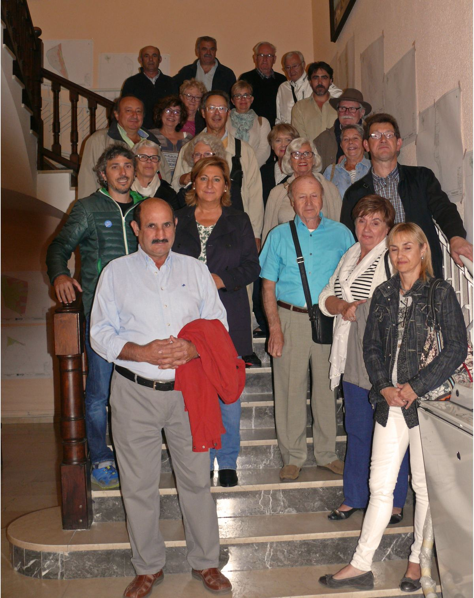
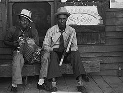
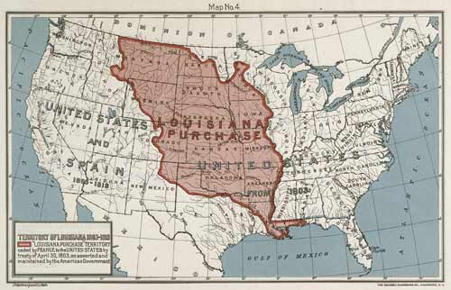

Images & souvenirs
Galerie
Affiches, voyages, fêtes : feuilletez nos souvenirs.






Vous avez des photos à partager ? Envoyez-les-nous via la page Contact.
Tope là ! On se serre la main ?
Adhérent, bénévole ou simple curieux : il y a toujours une place à notre table.